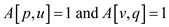
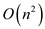
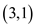

a)
Suppose  be the
matrix
representing the transitive closure, in such way that is 1 if
there exists a path from
be the
matrix
representing the transitive closure, in such way that is 1 if
there exists a path from  to
to , otherwise
0.
, otherwise
0.
• When a new edge is added into the graph, then check whether there is a possible path through the new edge. If there is a possible path, then update the matrix according to that.
• The algorithm must contain only two loops which iterate based
on the vertex V, because it must be .
.
Consider the algorithm of transitive closure which updates the transitive closure for each update into the graph.
TRANSITIVE-CLOSURE (u, v)
// iterate loop for all the vertices of graph
1. for
// iterate loop for another vertices of graph
2. do for
// if path from vertex p to u and v to q exists
3. do if
// updating new edge into the matrix
4. then
In this algorithm after adding an edge it may affect the whole matrix so this program updates each necessary index of matrix after adding an edge.
Since to traverse the whole matrix and checking whether to update the value or not, it requires two nested loops.
Since there are two ‘for’ loops iterating with
 ,
the complexity of the above algorithm is
.
,
the complexity of the above algorithm is
.
Consider the following procedure to update the transitive
closure of a graph
 when a new edge is added to
when a new edge is added to .
.
Consider a graph with no edges as shown below.
Initially there is no edge in the graph, so, the matrix will be in the form of, if and otherwise 0.

Now, add the edges to the graph and compute the transitive closure using TRANSITIVE-CLOSURE algorithm.
• Suppose, first edge connect the vertex 2 and 1, then for
 and, the
conditionand
becomes
true so, and.
and, the
conditionand
becomes
true so, and.
• So, , in this
case, which is becomes
one.
, in this
case, which is becomes
one.
Now, the new graph and corresponding matrix is given below:
So,, in this
case, which is becomes
one.
If the next adding edge is, then the two conditions become true. Now, becomes 1 since there is a path from 3 to 1.
New graph and its transitive closure are as shown below:
So,, in this
case, which is becomes
one.
Similarly, the TRANSITIVE-CLOSURE algorithm can be repeated to update the transitive closure matrix A for any edge that is added into the graph.
b)
Consider a straight line graph having n vertices and algorithm TRANSITIVE-CLOSURE mentioned above (part a):
The transitive closure of the given graph will be as below:
• In the above matrix, it can be seen that before adding any new edge, there are total entries and the transitive closure of the given graph is 1.
• The entries, which are above from the main diagonal contains 1 as a value.
Insert a new edge that connects the first and last vertex of the graph as shown below:
Then, the above graph will become a cyclic graph. Now, all the edges are reachable from every other edge.
Then all the entries will become 1.
So,
Entries must be needed to update the transitive closure. Thus, the time required to update the transitive closure is.
c)
If a graph has n vertices, then there are maximum edges or  edges which can be added to the graph.
• For adding one edge, the algorithm TRANSITIVE-CLOSURE defined
in part (a) will take time thus
to add edges, the
above mentioned algorithm will take time.
• Above algorithm is inefficient if there is already a path from p to v or v to q.
Consider the graph as shown below along with its transitive closure:
The matrix for the above graph is as shown below:
Add the edge  to the graph, there is no need to update the transitive closure because there is already a path from 3 to 1 through the vertex 2. So, the loop over q in above algorithm is redundant when.
• Below algorithm gives the updated transitive closure matrix after inserting the new edges to the graph.
• For updating the matrix, logical “and” operator used. After this checking process, updates are performed accordingly.
TRANSITIVE-CLOSURE-UPDATE (u, v)
// iterate loop for all the vertices of graph
1. for
2. do if
// iterate loop for all the vertices of graph
3. then for
4. do if
5. then
Explanation of the above algorithm:
It is known that there can’t be greater than  edges in the
graph, therefore,
.
edges in the
graph, therefore,
.
• Now, the addition of  insertions,
so total time taken in the first given two lines of the above
algorithm is or, because
insertions,
so total time taken in the first given two lines of the above
algorithm is or, because
• In the line numbers 3, 4 and 5, which takes  time, for
n insertions are executed only times.
time, for
n insertions are executed only times.
• It can be easily seen that the execution of the last three lines are performed only when, and in this case, the line number 5, sets.
• So, the 0 entries’ number in is reduced minimum 1 every time when the last three lines of the code run’s.
• Since, there exists only entries
in and these
lines can run maximum times.
and these
lines can run maximum times.
Hence, the above procedure takes time to update the transitive closure for any sequence of n insertions.
a.
The asymptotic running times for INSERT, EXTRACT-MIN and DECRESAE-KEY, as a function of d and the number n of elements in a d-ary min heap are , and respectively. The amortized costs for these operations in a Fibonacci heap are as follows: , , respectively.
b.
The shortest paths can be computed from a single source on an
 -dense
directed graph with no
negative-weight edges in time by
choosing .
-dense
directed graph with no
negative-weight edges in time by
choosing .
Implement Dijkstra’s algorithm using d-ary min-heap.
Thus, the run time will be for
constant , .
c.
The all-pairs shortest problem on an -dense
directed graph with no
negative-weight edges can be solved in time by
running the algorithm made by using Dijkstra’s algorithm. This
algorithm will run once for each vertex of the graph.
d.
The all-pairs shortest-paths problem can be solved in time on an
-dense
directed graph that may
have negative weight edges but has no negative weight cycles by
creating the graph G that has all non-negative edge weights.